Neural networks - concepts
Why use neural nets?¶
Consider a classification problem where the decision boundary is non-linear as shown below:
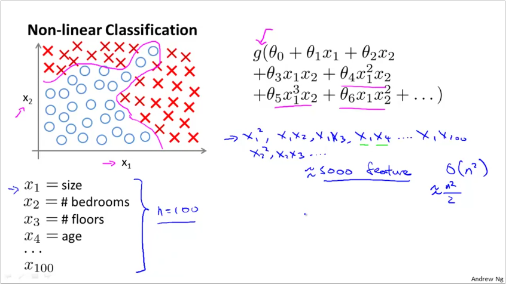
We can represent non-linearity in a linear model by adding higher order features. However, when the original dataset already comes with a large number of features (say 100), then feature engineered features increases by $\frac{O(n^{2})}{2}$ if we want to include quadratic features. Thus, for input data set with 100 features, the feature engineered features is in the order of 5000s. Fitting a model on such a data set is expensive, further, the model will overfit. Furthermore, if we want to represent cubic features, then order increases to $O(n^{3})$.
Why not traditional ML?¶
Image classification is also a non-linear problem. This is because the algorithm sees images as matrices. In the graphic below, we build a training set that classifies cars from non-cars.
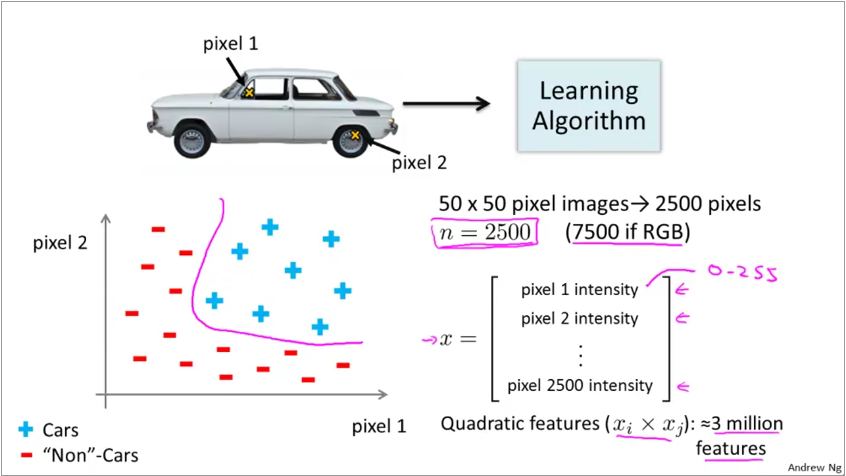
Each pixel in the image is now a feature. Thus a 50x50 grayscale image has 2500 features! Since the decision boundary is usually non-linear, the number of feature required for a quadratic fit is 3 million features. Trying to fit a logistic regression to this dataset is not feasible.
Why are neural nets powerful?¶
Neural nets mimic the biological neural nets found in animal brains. In brains, specific regions are responsible for specific functions. However, when scientists have conducted experiments where they would cut the signals from the ear to the sound processing region and rewrite the signals from eyes to it, the sound processing region now learns to process vision and functions just as good as the original vision processing engine. Similarly, they were able to repeat this for touch as well. Animal brain is effective as each region is not a bunch of complex algorithms, instead, most regions are general purpose systems built to infer data / signals.
An example of this approach are usecases for differently abled people shown below:
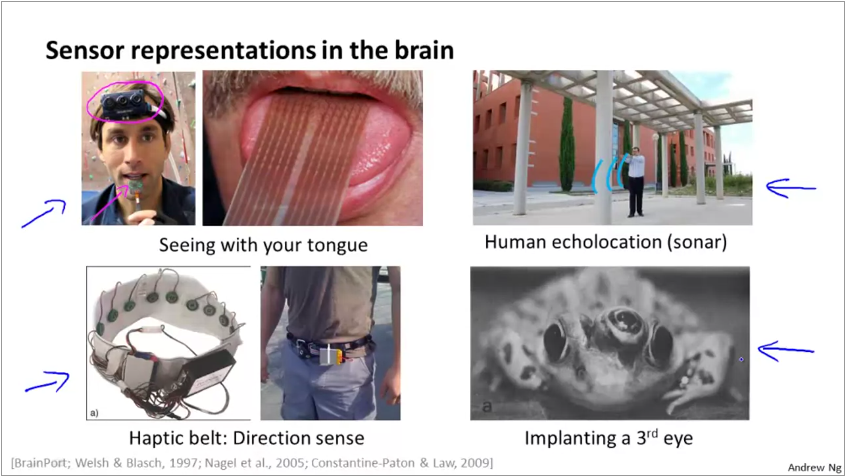
Neural net representation¶
The physical neuron in a brain looks like below. It has a set of dendrites which act as inputs, a processing engine and the axon which acts as output.
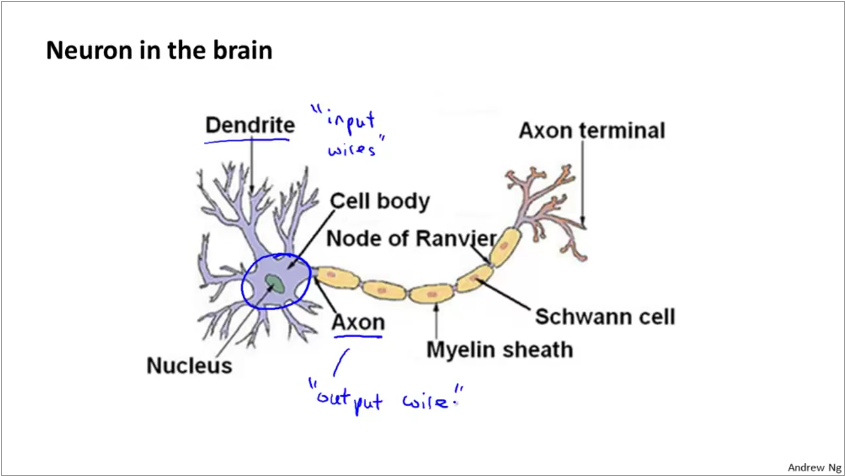
ANNs model these 3 parts of the neuron as shown below. A set of inputs, multiplied by their weights are fed to an activation function, which is a logit or sigmoid function.
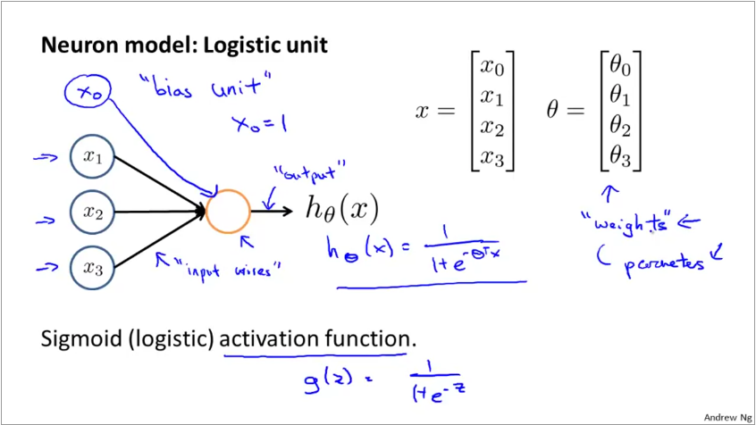
A group of neurons working together forms a neural net. The first layer is called the input layer and the last called the output layer. Sometimes, the bias is represented as an explicit node.
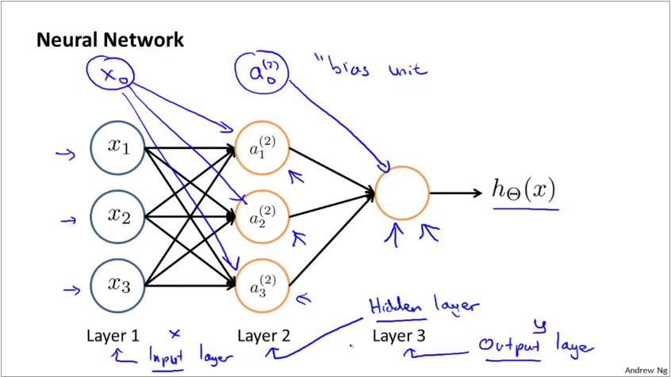
Weights in a neural net: The graphic below shows how weights are applied in a neural net. The hypothesis function for each neuron takes the familiar $g(\theta^{T}X)$ form. g is the sigmoid function and $\theta_{i,k}^{j}$ represents the weight for jth layer, hidden node i, input node k. There is always a bias node which is represented with index 0.
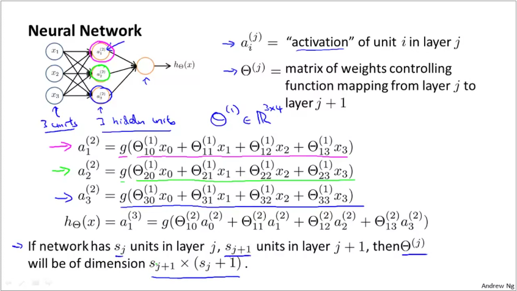
Thus, when you have 2 nodes in layer 1 (input) and 3 nodes in layer 2, the dimension of the weight matrix for layer 2 is 3 x (2+1), we add +1 to include the bias node in the first layer. Since weights is a matrix, we represent it with capital theta $\Theta$.
Vectorized implementation of forward propagation¶
The input parameters in the previous slide can be represented as a vector $x$ $$ x = \begin{bmatrix} x_{0}\\ x_{1}\\ x_{2}\\ x_{3} \end{bmatrix} $$ The activation function can be represented as $a^{(j)} = g(z^{(j)})$ where
$$ z^{(2)} = \begin{bmatrix} z_{1}^{2}\\ z_{2}^{2}\\ z_{3}^{2} \end{bmatrix} $$
Thus, $z^{(2)} = \Theta^{(1)}x$ and $a^{(2)} = g(z^{(2)})$. By extension, for the next layer, $z^{(3)} = \Theta^{(2)}a^{(2)}$ and $h_{\Theta}(x) = a^{(3)} = g(z^{(3)})$
Neural nets learn their own features¶
If you look at the second half of the simple neural net presented earlier, it is simply a logistic regression. The inputs are however, not inputs from real world, but activations of the previous layer. Thus, neural net can create its own input features. Because of this, it is capable of representing non-linear and higher order functions, even when the real world input does not have them.
Logical operations with neurons¶
Neurons in neural nets build complex representations using simple condition checks. Below is an example of how logical AND, OR operators are represented:
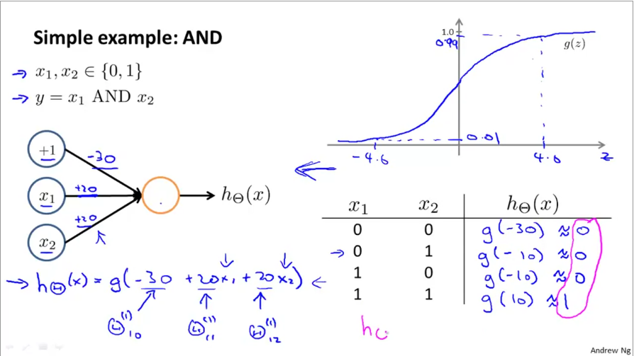
Then, by simply changing the weights, the same neuron can be switched to an OR operator:
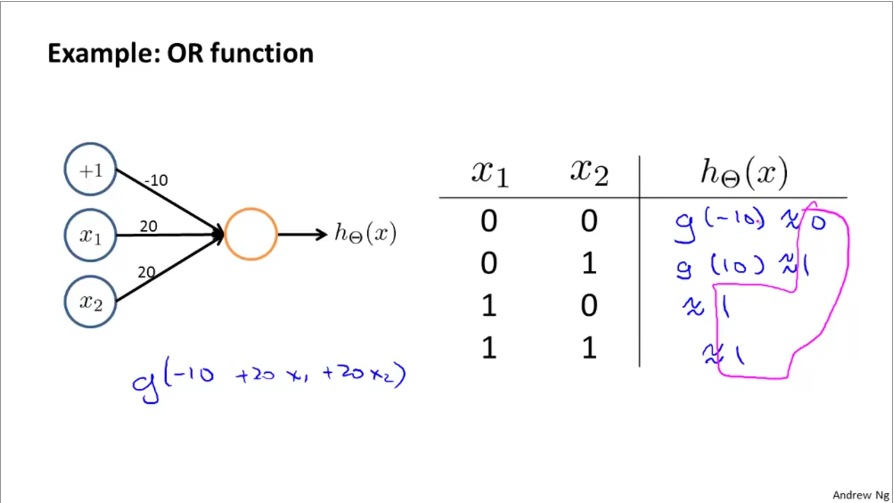
Why are these useful? Many layers of such neurons can build to represent more complex decision boundaries such as XOR or XNOR or even non-linear boundaries. Below is an example of how 2 layers of NN are used to build XNOR gate using OR, AND, NOR gates. XNOR gives 1 if both x1, x2 are 0 or 1.
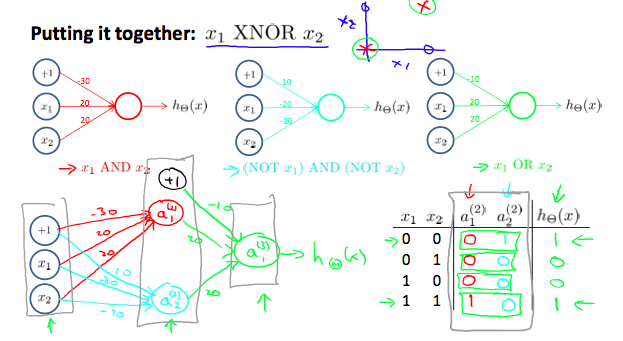
Multiclass classification with NN¶
Multiclass classification in NN is essentially a on-vs-all classification. The output layer has as many nodes as the number of classes. Further, the value of the output layer looks like one-hot encoding
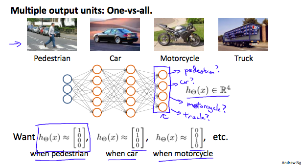
OCR on MNIST digits database using NN¶
The MNIST database has 14 million images of handdrawn digits. We work with a subset of 5000 images. Each image is 20x20 pixels. When laid out as a column vector (which is how Neural Nets and log reg algorithms will read it), we get a 1x400 row vector. A sample of 100 images is below:
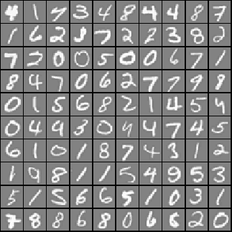
When classifying these digits, we work with 1 image at a time. This is unlike linear or logistic regression where we would represent the whole training set as matrix X. Here, we treat each pixel as a feature. Thus our input layer has 400+1 nodes (1 added to represent bias). The hidden layer from pre-trained network has 25 nodes. The output layer should have 10 nodes to represent the 10 classes we predict.
Thus, input layer is x = $a^{(1)}_{401x1}$. The weight matrix
$$ a^{(1)} = x_{401x1} $$
$$ z^{(2)} = \Theta^{(1)}_{25x401} . a^{(1)} $$
$$ a^{(2)}_{25x1} = sigmoid(z^{(2)}) $$
We will add a bias to $a^{(2)}$ when computing the next layer, making it $a^{(2)}_{26x1}$
$$ z^{(3)} = \Theta^{(2)}_{10x26} . a^{(2)} $$
$$ a^{(3)}_{10x1} = sigmoid(z^{(3)}) $$
$$ h_{\Theta}(x) = max(sigmoid(a^{(3)})) $$
The implementation code can be see here.